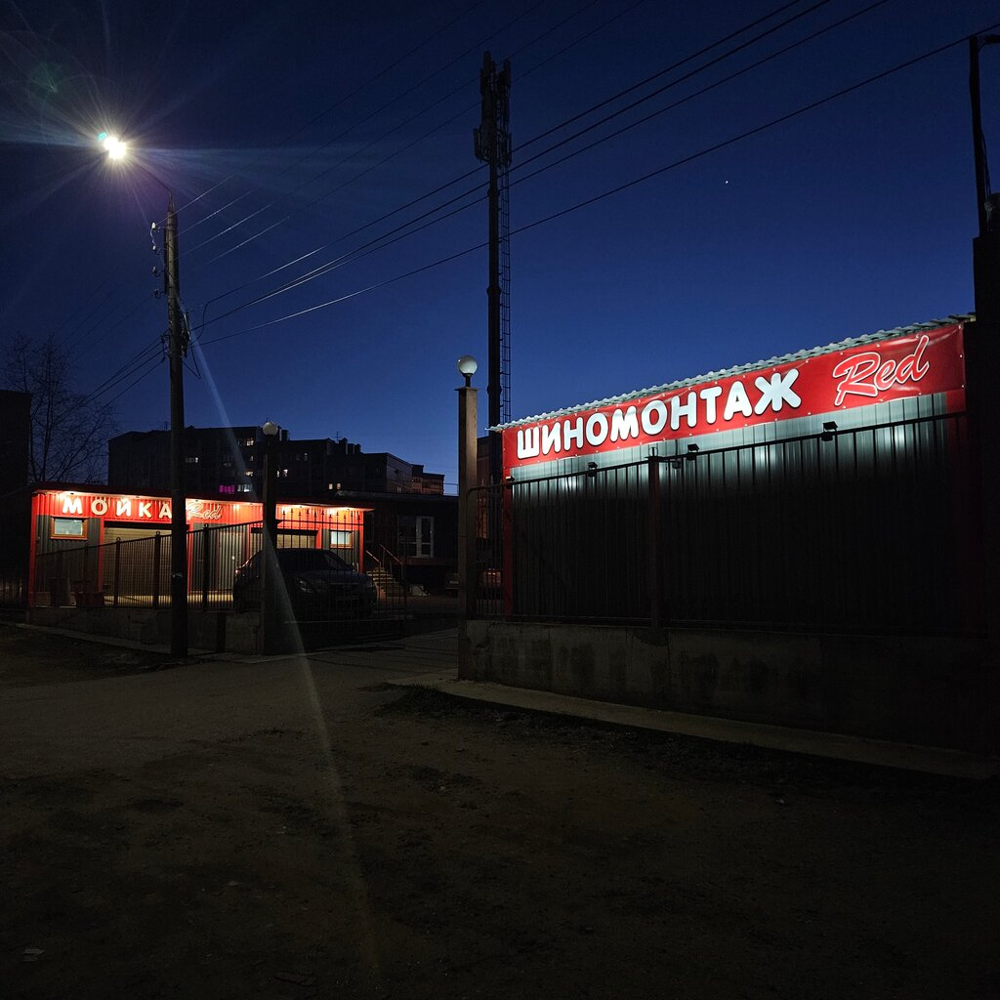

Тверь · ★ 5,0 · 69 отзывов на Яндекс Картах
Шиномонтаж «Рэд» в Твери
Балансировка, ремонт шин и дошиповка. Ежедневно с 9 до 21.
- Тверь, ул. 15 лет Октября, 50/1
- ежедневно 09:00–21:00
5,0рейтинг на Яндекс Картах
69отзывов клиентов
Почему мы
[ПРИШЛИТЕ: 3–4 причины выбрать вас: опыт, гарантии, сроки]
Отзывы клиентов
В самый неподходящий момент (в разгар сезона замены резины с летней на зимнюю) стало спускать колесо. Позвонил по телефону в этот сервис, не особо рассчитывая на успех, так как в это время обычно очередь расписана на несколько дней вперёд. Однако, мастер согласился принять и нашёл окошко в записи.
Шиномонтаж наверное лучший в городе. Под навесом, дождь не помеха, очень чистый и все инструменты в порядке. Затягивает болты динамометрическим ключем, а не шуруповертом, как везде
Приехал по записи, все вовремя, аккуратный работник, добрый, приветливый, резину заменили на высшем уровне, сервисом доволен, есть навес.
Фото

О нас
[ПРИШЛИТЕ: пару слов о себе: с какого года работаете, чем отличаетесь]
Позвоните или напишите — ответим на вопросы
Часы и контакты
- Адрес
- Тверь, ул. 15 лет Октября, 50/1
- Часы работы
- ежедневно 09:00–21:00
- Телефон
- +7 (930) 169-47-66
- wa.me/79301694766
Онлайн-запись подключу при доработке